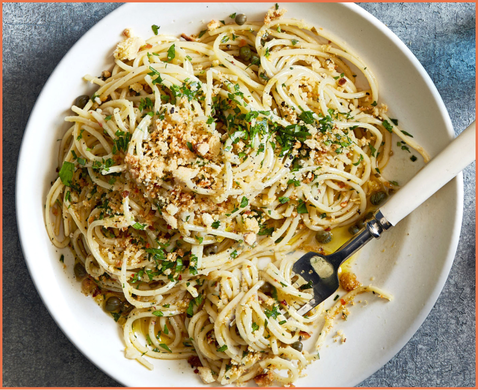

This dish is for when a 3 p.m. hang turns into a dinner party or when you’ve had too long of a day at work.

Ingredients
12 oz. spaghetti or other long pasta
Kosher salt
4 garlic cloves, thinly sliced
3 oil-packed anchovy fillets (optional)
1/4 tsp. crushed red pepper flakes
4 tbsp. unsalted butter, cut into pieces
3/4 cup finely grated parmesan, plus more for serving
Freshly ground black petter
1/3 cup finely chopped parsley
1 tsp. finely grated lemon zest
1 tbsp. fresh lemon juice
Directions
Step 1 Cook pasta in a large pot of boiling salted water, stirring occassionally, until very al dente, about 3 minutes less than
package directions.
Step 2 Cook garlic and 1/4 cup of oil in a large heavy pot over medium heat, stirring ocassionally, until garlic is golden, about 4 minutes.
Step 3 Add anchovies (if using) and red pepper flakes and cook, smashing anchovies with a wooden spoon to break them up, until anchovies begin to dissolve, about 1 minute.
Step 4 Using tongs, transfer pasta to pot with garlic and anchovies, then add butter, 3/4 cup Parmesan, 1 and 1/4 cups pasta cooking liquid, and lots of black pepper. Cook, tossing energetically and adding more pasta cooking liquid if needed, until pasta is al dente and sauce is thickened and coats pasta, about 4 minutes.
Step 5 Remove from heat and mix in parsley, lemon zest, and lemon juice.